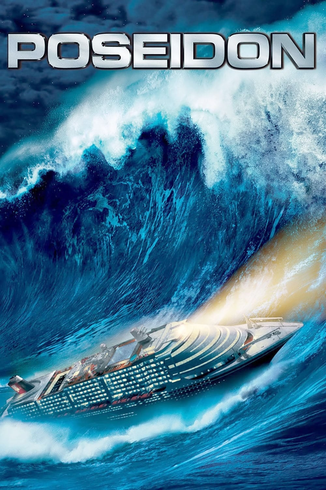

Мировая премьера: 12 мая 2006
Слоган: S.O.S.
Сюжет: Разгар празднования нового года на 13-палубном, высотой в 20-этажный дом корабле "Посейдон". Пассажиры поднимают бокалы и произносят речи за благополучное будущее. А будущее приближается неумолимо: 150-метровая волна переворачивает корабль вверх дном... и начинается отчаянная борьба за жизнь. Пассажирам приходится надеяться друг на друга в поисках спасения среди воды, останков корабля и перевёрнутого вверх дном мира.
Режиссёр: Вольфганг Петерсен
В основе: Роман Пола Галлико "Посейдон" (США, 1969)
В ролях: |
Джош Лукас | Дилан Джонс |
| Курт Расселл | Роберт Рэмзи | |
| Джасинда Барретт | Мэгги Джеймс | |
| Эмми Россум | Дженнифер Рэмзи | |
| Майк Фогель | Кристиан Сандерс | |
| Миа Маэстро | Элена Моралес | |
| Ричард Дрейфусс | Ричард Нельсон | |
| Андре Брогер | Капитан Майкл Брэдфорд | |
| Кевин Диллон | Везунчик Ларри | |
| Фредди Родригес | Марко Валентин | |
| Джимми Беннетт | Конор Джеймс | |
| Стейси Фергюсон | Глория |
Бюджет: $ 160 млн.
Кассовые сборы в США: $ 61 млн.
Кассовые сборы в мире: $ 182 млн.
Продолжительность: 1 ч. 29 мин.
Рейтинг: 5.7